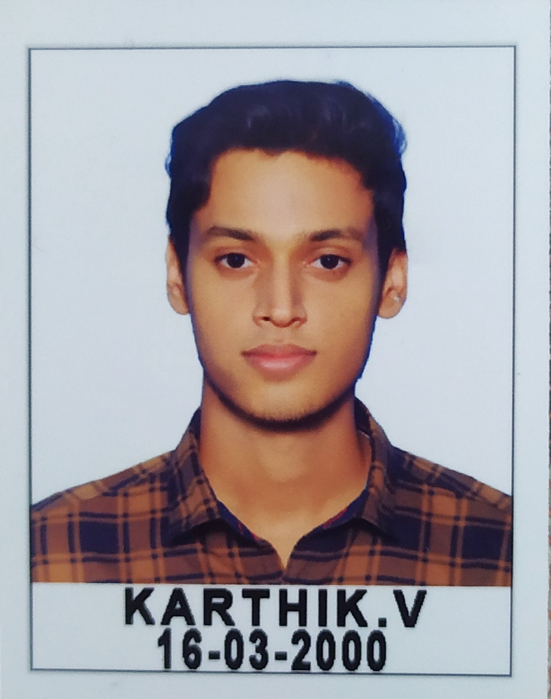

Karthik V
Kazhakootam, Trivandrum
Phone: 8547991516
Email: karthikvntvm@gmail.com
LinkedIn: https://bit.ly/3W3Tr1o
Objective
Results-driven software professional with expertise in software development, production support, and IoT. Known for leveraging a keen analytical approach to optimize processes and solve critical issues. Eager to contribute to a dynamic team to drive innovative outcomes and efficiency improvements.
Experience
UST, Trivandrum
Developer-I/ Production Support
- Designed, developed, and implemented multiple integrations using TIBCO.
- Saved multi-million dollars loss by proactively fixing production issues.
- Co-ordinated company-wide patching and disaster recovery activities in record time.
- Liaised with clients daily to ensure smooth deployment and address production issues.
- Worked with multiple teams for the development and deployment of integrations.
- Resolved multiple production issues consistently meeting SLA requirements.
- Hands-on experience in handling API, web services, EDI, payment gateways, etc.
Developer-I Software Engineering
- Successfully completed training in Java full stack provided by UST.
- Worked with the internal team in developing microservices, websites, and code parser software using AI.
Education
APJ Abdul Kalam Technological University
BTech in Electronics and Communication Engineering (~8 CGPA)
Skills
- Programming and Development: Java, Spring Boot, HTML, CSS, JavaScript, SQL, TIBCO (BW, Admin, Designer, Hawk, EMS), MQ.
- Tools and Platforms: ServiceNow, Putty, Datadog, Splunk, NewRelic, Jira, Layer7 Policy, Elastic Search, Shell Scripting, Gems, WinSCP, ArgoCD, Jenkins, Unix, Postman, Git, GitLab.
- General: Microsoft Excel, Word, PowerPoint, Outlook, Access, Prompt Engineering, Arduino, Raspberry Pi, IoT.
Projects
A Newfangled Vehicle Parking Framework And Accident Restraint System
- Implementation of Automatic Beam Shifter and Emergency Vehicle Identing System using V2V communication successfully enhanced safety and driving experiences.
- Identifies available parking spaces and helps users book slots.
Dual Axis Solar Tracker With Weather Monitoring System
- The proposed system was able to orient solar panels to maximum sunlight spots to increase energy production.
- Measures and monitors atmospheric parameters like temperature, humidity, barometric pressure, ambient light, etc.
Internship
- GNSS (ISRO/ISU-Government of India): Done one week internship at Inertial System Unit on domain global navigation satellite system.
- IOT (LIVE WIRE): Done one week internship on IoT and its hardware.
- Open Street Map (APJ Abdul Kalam Technological University): Done 5 days online internship in Geo mapping using Open Street Map.